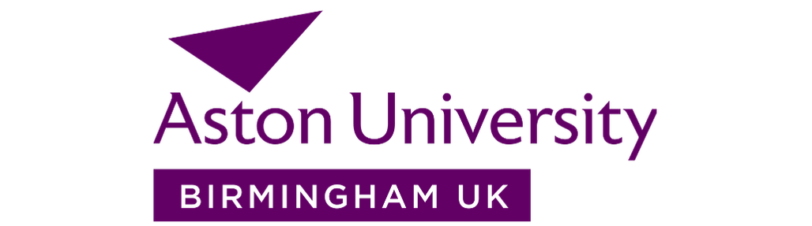
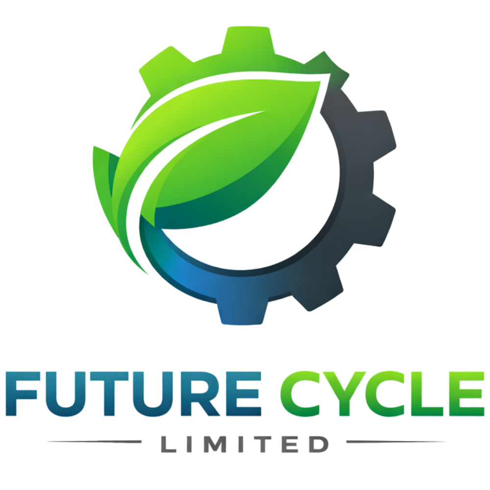
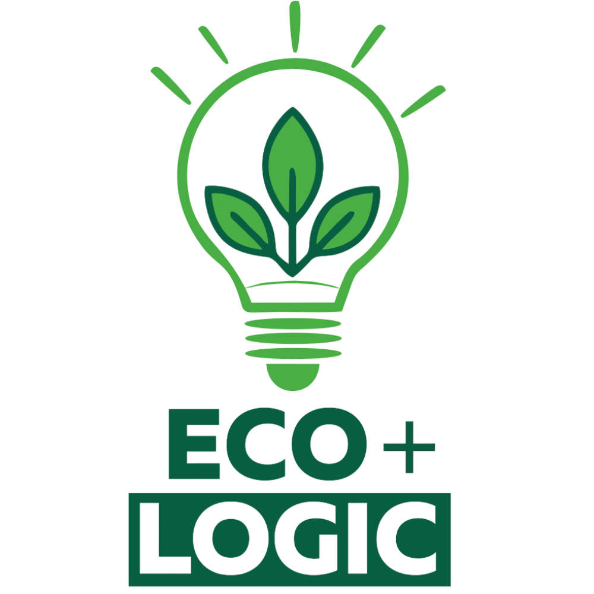
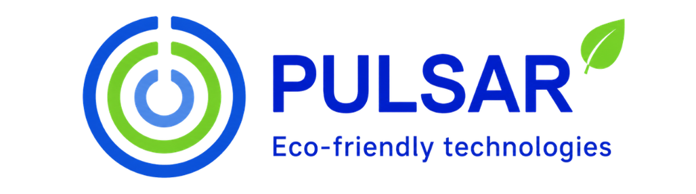
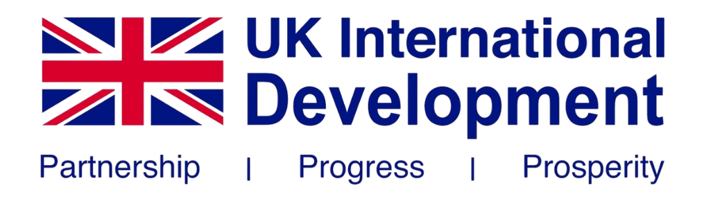

Aston University
Scientific project lead
Our projects are delivered through UK-Ukraine consortia, local communities, education institutions and donor-supported innovation programmes.

Scientific project lead

Technology integration and commercialisation

Installation, commissioning and local maintenance

Project lead and pyrolysis-gasification technology developer
Technical coordinator

Local implementation and construction debris processing

Engineering and prototype assembly

Scientific expertise and materials research
Nanomaterials development

Humanitarian coordination and EU-level communications

Simple Heat pilot location

BioSolar Nexus demonstration site

International innovation support programme

Development partner